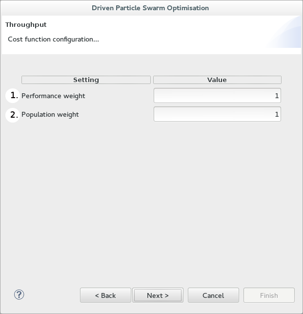

Cost function configuration

The above is a screen shot of the second page of the CPT wizard. In this page you are configuring the cost function parameters:
- Performance weight* - increasing this with respect to the population weight makes the impact of the performance deviation from its target
"more important" than population cost in the cost function.
- Population weight* - conversely to the above, an increase in population weight makes population cost
"more important" in terms of influence on the cost function.
*See CPT reference "Cost function" for more details